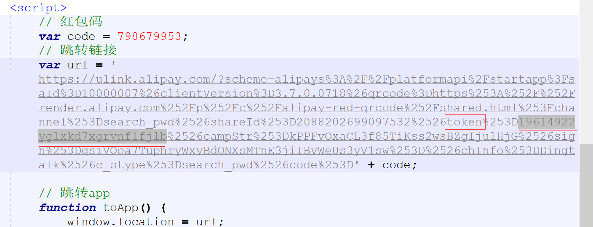
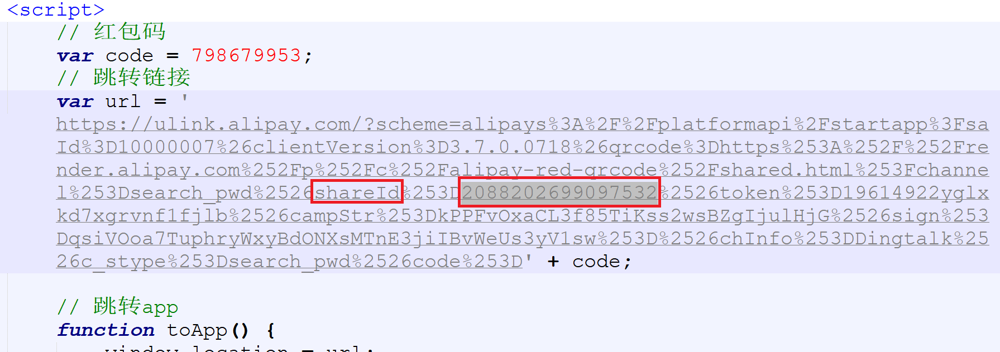

1.
获取源代码
复制到文本编辑器中(用记事本)
2.用支付宝扫一扫下面二维码获取你自己的shareId
3.token 需要在支付宝赚钱红包页面点击分享，然后分享至钉钉，这个时候，二维码就会被保存，然后用微信扫码，出来就是一个token，将这个token的 19 开头前面的删除，剩下的就是我们需要的token。

4.修改源代码中的shareId和token 如图灰色选中部分

5.将修改好后的源码保存为html格式再上传到你网站服务器或腾讯云cos对象存储中即可
微信扫一扫查看示例：